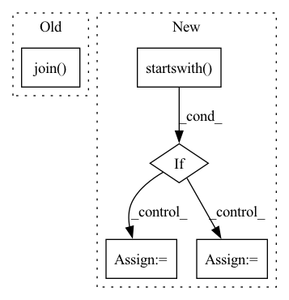

Pattern ID :5646

Before Change
url, cache_dir=local_path, **download_kwargs
)
os.rename(os.path.join(local_path, fetched_file), local_abs_path)
return local_abs_path
After Change
savedir.mkdir(exist_ok=True)
sourcefile = f"{source}/{filename}"
destination = savedir / filename
if source.startswith("http://") or source.startswith("https://"):
// Interpret source as web address.
// Download
try:
urllib.request.urlretrieve(sourcefile, destination)
except urllib.error.URLError:
raise ValueError(
f"Interpreted {source} as web address, but could not download."
)
elif pathlib.Path(source).is_dir():
// Interpret source as local directory path
// Just symlink
sourcepath = pathlib.Path(sourcefile).absolute()
destination.unlink(missing_ok=True)
destination.symlink_to(sourcepath)
else:
// Interpret source as huggingface hub ID
// Use huggingface hub"s fancy cached download.
try:
import huggingface_hub
except ImportError:
// Extra tools pattern:
raise ValueError(
f"Interpreted {source} as Huggingface hub ID, but Huggingface-hub"
"is not installed. Please install with pip install huggingface-hub"
)
url = huggingface_hub.hf_hub_url(source, filename)
fetched_file = huggingface_hub.cached_download(url, cache_dir=savedir)
// Huggingface hub downloads to etag filename, symlink to the expected one:
sourcepath = pathlib.Path(fetched_file).absolute()
destination.unlink(missing_ok=True)
destination.symlink_to(sourcepath)
return destination
In pattern: SUPERPATTERN
Frequency: 3
Non-data size: 5
Instances
Fragment ID: 19861710
Project Name: speechbrain/speechbrain
Commit Name: bddc7b68453731ac3cac39e3dc8e33b6e447f8f2
Time: 2021-02-26
Author: aku.rouhe@aalto.fi
File Name: speechbrain/pretrained/fetching.py
M Class Name: AnonimousClass
N Class Name: AnonimousClass
M Method Name: fetch(3)
N Method Name: fetch(3)
M Parent Class:
N Parent Class:
M File Name: speechbrain/pretrained/fetching.py
N File Name: speechbrain/pretrained/fetching.py
M Start Line: 25
M End Line: 56
N Start Line: 10
N End Line: 79
'>
Before Change
yield id_, {
"speaker_id": speaker_id,
"path": os.path.join(path_to_clips, speaker_id, data[0] + ".wav"),
"audio": os.path.join(path_to_clips, speaker_id, data[0] + ".wav"),
"sentence": data[1],
}
After Change
inside_clips_dir = False
id_ = 0
for path, f in audio_files:
if path.startswith(path_to_clips):
inside_clips_dir = True
if path in examples:
audio = {"path": path, "bytes": f.read()}
yield id_, {**examples[path], "audio": audio}
id_ += 1
elif inside_clips_dir:
break
'>
Fragment ID: 19861741
Project Name: huggingface/datasets
Commit Name: 0534a87f60fb9a589138f0773e057c2429f482b7
Time: 2021-11-19
Author: 42851186+lhoestq@users.noreply.github.com
File Name: datasets/vivos/vivos.py
M Class Name: VivosDataset
N Class Name: VivosDataset
M Method Name: _generate_examples(4)
N Method Name: _generate_examples(3)
M Parent Class: datasets.GeneratorBasedBuilder
N Parent Class: datasets.GeneratorBasedBuilder
M File Name: datasets/vivos/vivos.py
N File Name: datasets/vivos/vivos.py
M Start Line: 116
M End Line: 125
N Start Line: 113
N End Line: 138
'>
Before Change
def download(self):
// Download to `self.raw_dir`.
url = "https://github.com/FedML-AI/FedGraphNN/tree/main/data/recommender_system"
url = osp.join(url, self.name)
for name in self.raw_file_names:
download_url(f"{url}/{name}", self.raw_dir)
def process(self):
After Change
def download(self):
// Download to `self.raw_dir`.
url = "https://github.com/FedML-AI/FedGraphNN/tree/main/data/recommender_system"
if self.name.startswith("FL"):
suffix = self.name[2:]
else:
suffix = self.name
url = osp.join(url, suffix)
for name in self.raw_file_names:
download_url(f"{url}/{name}", self.raw_dir)
'>
Fragment ID: 19861706
Project Name: alibaba/federatedscope
Commit Name: bf199dcdea708763d7cef4fd338660b917e33327
Time: 2022-06-28
Author: 39145382+rayrayraykk@users.noreply.github.com
File Name: federatedscope/gfl/dataset/recsys.py
M Class Name: RecSys
N Class Name: RecSys
M Method Name: download(1)
N Method Name: download(1)
M Parent Class: InMemoryDataset
N Parent Class: InMemoryDataset
M File Name: federatedscope/gfl/dataset/recsys.py
N File Name: federatedscope/gfl/dataset/recsys.py
M Start Line: 128
M End Line: 129
N Start Line: 128
N End Line: 133